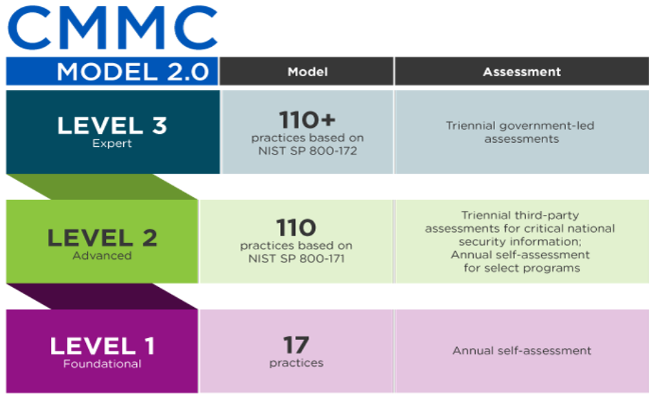

CMMC Level 1#
Visit Website j-class.com.
An Overview#
The CMMC exists in order to prevent theft and loss of sensitive information that adversely impacts the DoD. In particular, it safeguards the Defense Industrial Base sector (DIB) and the broader supply chain of DoD contractors from cybercrime targeting sensitive information.
The second version of CMMC came out in November 2021 and it’s affecting all DoD contractors and their supply chains working with federal contract information (FCI) or controlled unclassified information (CUI).
The CMMC Framework#
Protecting Federal Contract Information (FCI) and Controlled Unclassified Information (CUI) that reside on supplier networks is an important step in reducing risk to National Security. The Department of Defense created the Cybersecurity Maturity Model Certification (CMMC) to raise the level of information security across the entire Defense Industrial Base (DIB) and better protect our nation's critical information. In contrast to traditional CMMC that is composed of 5 levels, now CMMC model 2.0 is being followed that is better yet it simplifies compliance. The Certification levels will be determined through audits from independent, third-party assessment organizations (C3PAO).

J-Class’s Portfolio of CMMC#
J-Class adopted the CMMC model 2.0, comprising 3 levels and each level entails different practices. In this document, we will go through all the levels and have a look at the features implemented at each level and what they offer.
ACCESS CONTROL (AC)#
The access control (AC) domain focuses on the tracking and understanding of who has access to your systems and network. This includes user privileges, remote access and internal system access.
1.1. AC.L1-3.1.1#
FAR Terminology#
Limit information system access to authorized users, processes acting on behalf of authorized users, or devices (including other information systems).
Solution Description#
Identify who is allowed to use your company computers and create their own accounts to log on. Don’t share passwords. When an employee leaves your company, disable their accounts. Log out or lock computers when they are not in use.
1.2. AC.L1-3.1.1#
FAR Terminology#
Limit information system access to the types of transactions and functions that authorized users are permitted to execute.
Solution Description#
Non-IT employees should not have Administrator rights to make changes on computers. Limit files to be viewed by only employees who need access.
1.3. AC.L1-3.1.20#
FAR Terminology#
Verify and control/limit connections to and use of external information systems.
Solution Description
Have a Wi-Fi network for employees and a separate Wi-Fi network for guests. For telecommute, only use VPN to connect to internal files
1.4. AC.L1-3.1.22#
FAR Terminology#
Control information posted or processed on publicly accessible information systems.
Solutions Description#
Make sure cloud storages are not shared and have a strong password. Never post sensitive information to public websites or the media.
IDENTIFICATION AND AUTHENTICATION (IA)#
The Identification and Authentication (IA) domain focuses on the roles within your organization. It synergizes with the AC by ensuring that access to all systems and networks is traceable for reporting and accountability.
2.1. IA.L1-3.5.1#
FAR Terminology#
Identify information system users, processes acting on behalf of users, or devices.
Solution Description#
Individual accounts have individual passwords with no sharing.
2.2. IA.L1-3.5.2#
FAR Terminology#
Authenticate (or verify) the identities of those users, processes, or devices, as a prerequisite to allowing access to organizational information systems.
Solution Description#
All computer devices require a username/password. All devices have a PIN (including company cell phones) to access. Lockout occurs within 20 minutes if not used.
Media Protection (MP)#
Media Protection focuses on identifying, tracking and ongoing maintenance of media. It also includes policies about protection, data sanitation and acceptable transportation.
3.1. MP.L1-3.8.3#
FAR Terminology#
Sanitize or destroy information system media containing Federal Contract Information before disposal or release for reuse.
Solution Description#
When getting rid of any company devices, work with an IT professional to destroy data (even if "deleted"). Shred documents & CD's before you get rid of them.
PHYSICAL PROTECTION#
Physical protection is often an overlooked domain for many organizations. Sure, most places implement a sign-in process, requiring card reader identification and access to certain portions of their location. Yet, not every organization supervises its visitors throughout their entire stay. PE helps organizations with that.
4.1. PE.L1-3.10.1#
FAR Terminology#
Limit physical access to organizational information systems, equipment, and the respective operating environments to authorized individuals.
Solution Description#
Identify areas where work spaces will be that are not in public areas. Keep all sensitive equipment in the private area with limited to no access from vendors/visitors.
4.2. PE.L1-3.10.3#
FAR Terminology#
Escort visitors and monitor visitor activity.
Solution Description#
Escort visitors to a conference room or other area with no computer screen viewing. If a delivery occurs, take the delivery from the vendor and put items away without visitors walking through.
4.3. PE.L1-3.10.4#
FAR Terminology#
Maintain audit logs of physical access.
Solution Description#
Have a visitor log of who was in the office, time and purpose on hand for 7+ years.
4.4. PE.L1-3.10.5#
FAR Terminology#
Control and manage physical access devices.
Solution Description#
When an employee leaves the company, take their keys. Lock windows. Ensure your computer and documents are locked. Reduce access of keys and security systems to only who needs access.
SYSTEM AND COMMUNICATION PROTECTION#
Communication is an integral part of every organization. That communication between employees needs to be secure so that no bad actor may eavesdrop and record sensitive data. The System and Communication Protection (SC) domain focuses on the implementation of boundary level defense on an organizational communication level.
5.1. SC.L1-3.13.1#
FAR Terminology#
Monitor, control and protect organizational communications (e.g., information transmitted or received by organizational information systems) at the external boundaries and key internal boundaries of the information systems.
Solution Description#
The company network should be private. Configure the firewall to stop all traffic from the internet be default, this helps to limit the attacks from the public internet
5.2. SC.L1-3.13.5#
FAR Terminology#
Implement subnetworks for publicly accessible system components that are physically or logically separated from internal networks.
Solution Description#
Use a web hosting site for your website. If you must maintain hosting, let an IT specialist open access to set it up securely. Always use a firewall.
SYSTEM AND INFORMATION INTEGRITY
The last domain that relates to what’s required by Level 1 contractors is System and Information Integrity (SI). This domain focuses on the ongoing maintenance and management of issues within information systems.
6.1. SI.L1-3.14.1#
FAR Terminology#
Identify, report, and correct information and information system flaws in a timely manner.
Solution Description#
Imagine you are hacked, what is your plan to recover all files? Ensure all equipment is updated with install updates routinely to keep the devices savvy to hacking attempts.
6.2. SI.L1-3.14.2#
FAR Terminology#
Provide protection from malicious code at appropriate locations within organizational information systems.
Solution Description#
Use antivirus software on all computers to ensure malware and viruses are caught before they occur.
6.3. SI.L1-3.14.4#
FAR Terminology#
Update malicious code protection mechanisms when new releases are available.
Solution Description#
By paying for the antivirus software/service, routinely keep the scans up to date.
6.4. SI.L1-3.14.4#
FAR Terminology#
Perform periodic scans of the information system and real-time scans of files from external sources as files are downloaded, opened, or executed.
Solution Description#
Weekly antivirus scans are essential for active protection from malware and viruses on all computers.